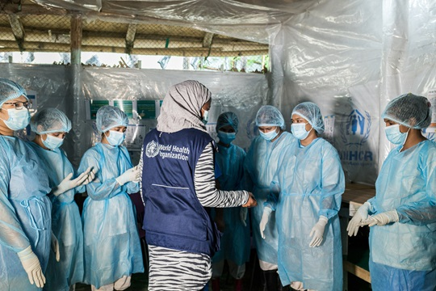
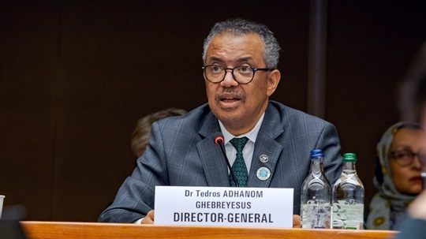
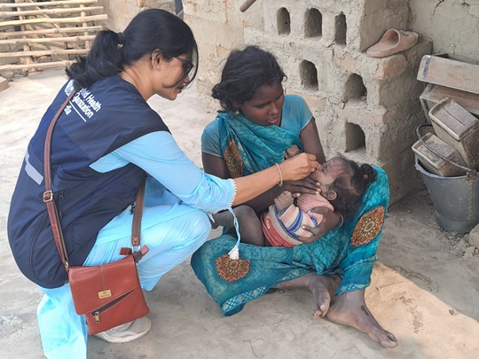
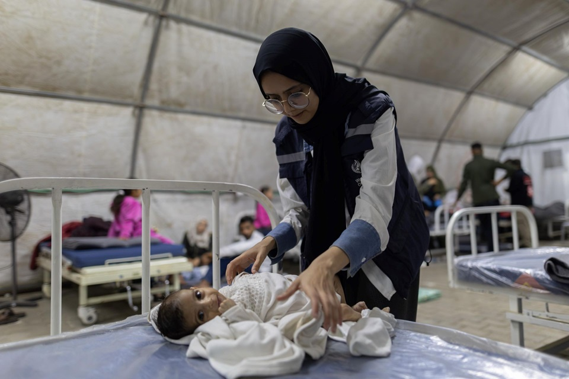
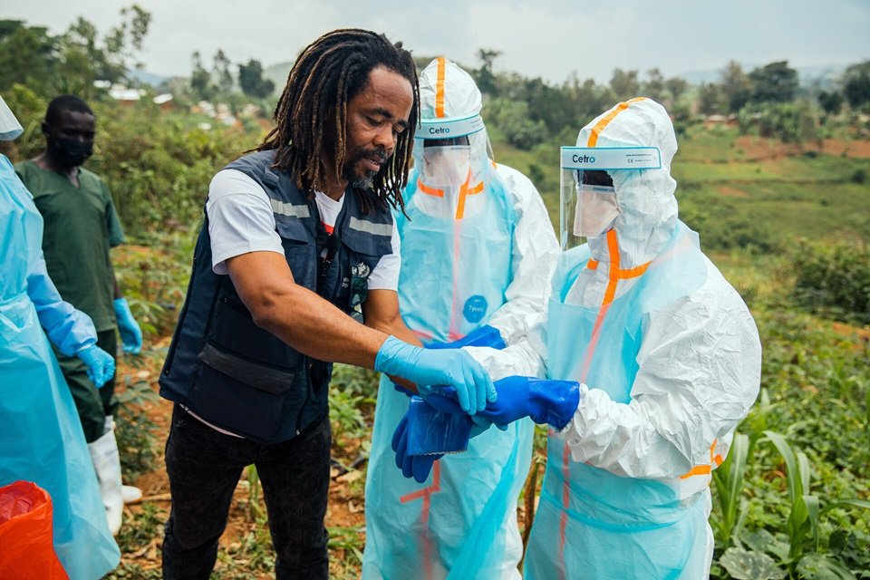

[ Image Gap: Healthcare Workers & Patient Vaccination ]
[ Image Gap: Healthcare Workers & Patient Vaccination ]
Placeholder for the main banner photo featuring health workers conducting vaccinations in the field.
World Health Organization (WHO)
The World Health Organization (WHO) is an international organization that works to promote and protect the health of people throughout the world[cite: 1]. It is a specialized agency of the United Nations and was established on 7 April 1948[cite: 1]. The headquarters of WHO is located in Geneva, Switzerland[cite: 1]. WHO works with governments and other health organizations to prevent diseases, improve healthcare services, provide health information, and respond to health emergencies[cite: 1].
One of the main roles of WHO is to promote global health[cite: 1]. It helps countries improve the health and well-being of their populations by providing scientific advice, health guidelines, and technical support[cite: 1]. WHO encourages healthy lifestyles, good nutrition, physical activity, proper hygiene, clean water, sanitation, and access to quality healthcare[cite: 1]. It also promotes the idea that everyone should have access to the healthcare they need, regardless of their social or economic situation[cite: 1].
WHO is also important in the prevention and control of diseases[cite: 1]. It helps countries deal with infectious diseases such as malaria, tuberculosis, HIV/AIDS, cholera, measles, and polio[cite: 1]. WHO provides information about how diseases spread and how they can be prevented and treated[cite: 1]. It also helps countries monitor diseases so that outbreaks can be identified early and appropriate action can be taken[cite: 1].

Another important role of WHO is responding to health emergencies[cite: 1]. When there is an epidemic, pandemic, natural disaster, or other major health crisis, WHO provides technical advice and helps coordinate international efforts[cite: 1]. It supports countries in preparing for emergencies, monitoring diseases, protecting healthcare workers, and providing appropriate health responses[cite: 1]. This is important because many diseases can spread quickly from one country to another[cite: 1].

WHO also develops health standards and guidelines that are used by countries around the world[cite: 1]. These guidelines cover areas such as medicines, vaccines, food safety, disease prevention, infection control, maternal health, and child health[cite: 1]. By providing international health standards, WHO helps countries improve the quality, safety, and effectiveness of their healthcare services[cite: 1].
WHO provides important support to developing countries that may have limited healthcare resources[cite: 1]. It helps governments strengthen hospitals, health centres, vaccination programs, disease-control programs, and healthcare systems[cite: 1]. It also provides technical assistance and training to health workers and government officials[cite: 1]. This support helps countries improve their ability to provide healthcare to their populations[cite: 1].
Another benefit of WHO is that it collects and provides health information from different countries[cite: 1]. It gathers information about diseases, deaths, life expectancy, vaccination, maternal health, and other health conditions[cite: 1]. This information helps governments and health professionals understand health problems and plan appropriate programs[cite: 1]. WHO also publishes health reports and scientific information that can be used by researchers, health workers, and policymakers[cite: 1].

WHO plays an important role in vaccination and immunization programs[cite: 1]. It works with countries and other organizations to increase access to vaccines and encourage routine childhood immunization[cite: 1]. Vaccination protects individuals and communities from serious diseases and has contributed to the reduction or elimination of several vaccine-preventable diseases, including polio in many parts of the world[cite: 1].

WHO also works to improve maternal and child health[cite: 1]. It promotes proper care for women during pregnancy, safe childbirth, postnatal care, breastfeeding, child nutrition, and childhood immunization[cite: 1]. These activities help reduce illness and deaths among mothers, newborn babies, and children and contribute to healthier families and communities[cite: 1].

In conclusion, the World Health Organization is very important because it helps countries work together to solve health problems that affect people around the world[cite: 1]. Its benefits include preventing and controlling diseases, improving healthcare systems, supporting vaccination, promoting maternal and child health, providing reliable health information, and coordinating responses to health emergencies[cite: 1]. Its headquarters is in Geneva, Switzerland, and its overall goal is to help people achieve the highest possible level of health[cite: 1].